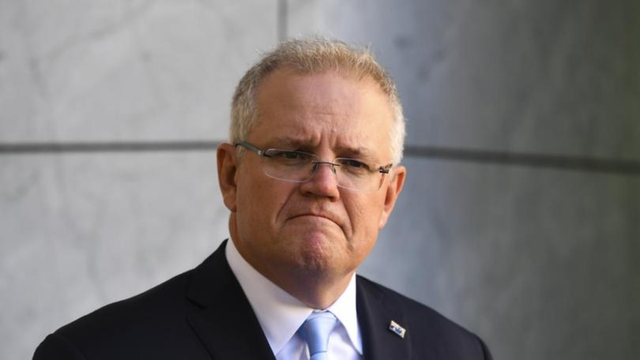

在对漫画事件反应强烈并宣称要求中国“道歉”一天后，澳大利亚总理莫里森今天（12月1日）却突然“灭火”说，不要进一步放大此事。 据澳大利亚《新日报》网站消息，莫里森当天参加视频会议时表示，澳大利亚的目标是维护国家利益和价值观，同时努力保持与中国的工作关系。 莫里森资料图 “我们的工作重点是建立对话，使我们能够稳定地解决政府间的问题。”莫里森当时说，“那（件事）不需要再进一步放大。” 报道称，莫里森还承认中澳关系目前处于一个比较严峻的状态。
此前一天，澳大利亚总理莫里森曾要求中方就中国外交部发言人赵立坚在推特发布澳军队残杀阿富汗儿童的漫画道歉，声称这是“伪造的”，中国应该为此“感到耻辱（feel ashamed）”。 对此，中国外交部发言人华春莹11月30日回应称，澳大利亚军人在阿富汗犯下严重罪行，这是澳大利亚媒体自己报道出来的，也得到了澳大利亚国防部调查报告的确认。澳大利亚国防军司令坎贝尔就此举行了专题发布会，
介绍报告的内容，报告披露的细节令人震惊和毛骨悚然，其中就包括将成年男子和男孩集中起来枪杀，或者蒙眼割喉，将两名14岁的男孩割喉后装入口袋，投入河流，而且还要求新兵枪杀战俘，以“练手”等 30日，引发莫里森怒火的这张漫画图片的创作者、社交账号名为“乌合麒麟”的中国青年画手在接受《环球时报》记者采访时表示，他对澳大利亚总理居然对一张插画产生如此强烈的愤怒“感到非常惊讶”，他认为，莫里森的愤怒不应对准赵立坚或自己的插画作品，而应聚焦在澳大利亚军队在阿富汗实施的暴行。此前，他在被问及对于赵立坚在推特上发布他的画作，并被澳大利亚总理“挂”的事件有何看法时说，“那我今晚有空再画一张吧”。